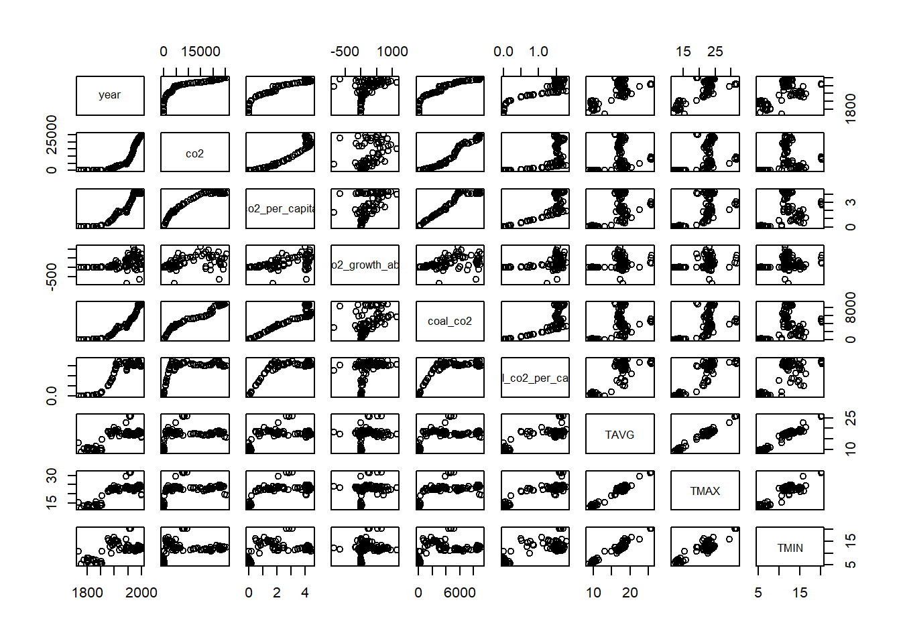
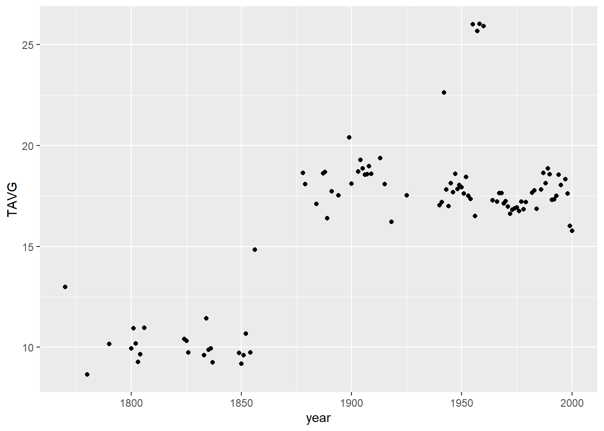
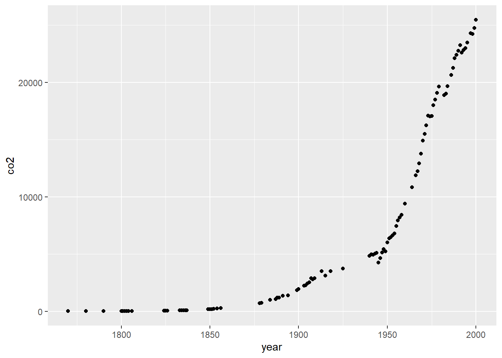
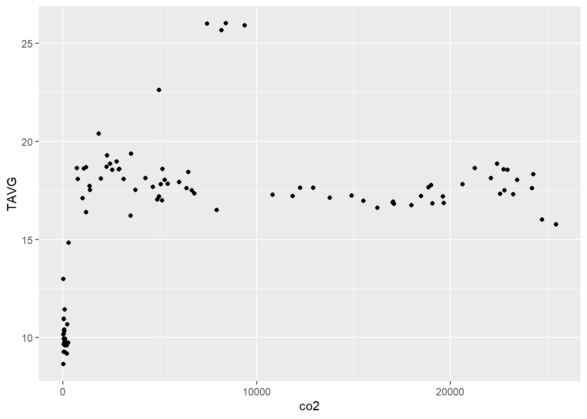
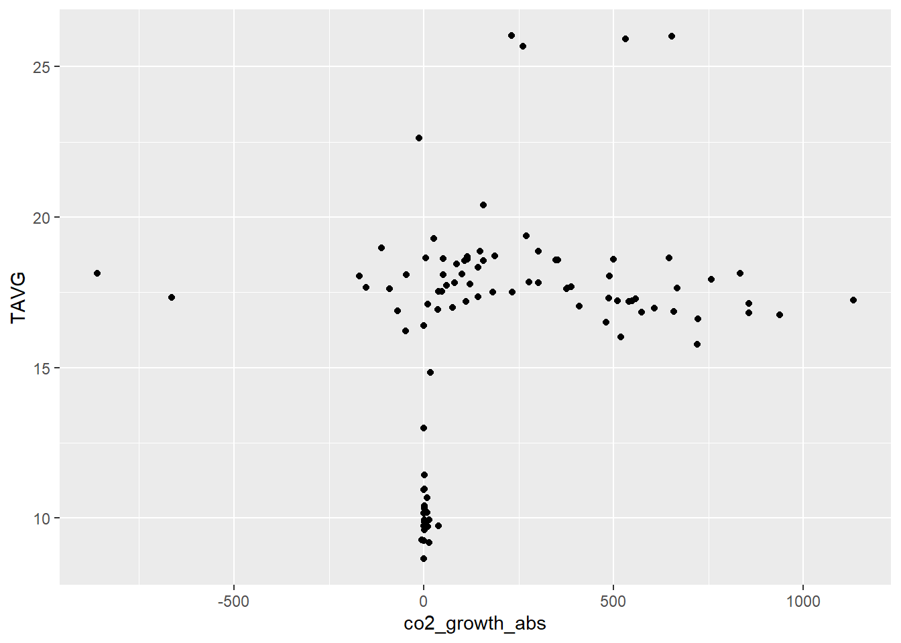

#Load Tidyverse
library(tidyverse)
#load dplyr
library(dplyr)
#load ggplot2
library(ggplot2)STAT-Project: Regression
(df <- read.csv("regression-temp-final-df.csv"))cor(df) year co2 co2_per_capita co2_growth_abs coal_co2
year 1.0000000 0.8368824 0.9411202 0.4849105 0.9238670
co2 0.8368824 1.0000000 0.9371481 0.4777168 0.9682974
co2_per_capita 0.9411202 0.9371481 1.0000000 0.5668622 0.9665037
co2_growth_abs 0.4849105 0.4777168 0.5668622 1.0000000 0.4872515
coal_co2 0.9238670 0.9682974 0.9665037 0.4872515 1.0000000
coal_co2_per_capita 0.9202849 0.6496179 0.8380674 0.4527208 0.8045924
TAVG 0.7132256 0.3808344 0.5753590 0.2948494 0.5449031
TMAX 0.7948964 0.4645645 0.6619413 0.3259918 0.6270482
TMIN 0.5594763 0.2446670 0.4233847 0.2346616 0.4008335
coal_co2_per_capita TAVG TMAX TMIN
year 0.9202849 0.7132256 0.7948964 0.5594763
co2 0.6496179 0.3808344 0.4645645 0.2446670
co2_per_capita 0.8380674 0.5753590 0.6619413 0.4233847
co2_growth_abs 0.4527208 0.2948494 0.3259918 0.2346616
coal_co2 0.8045924 0.5449031 0.6270482 0.4008335
coal_co2_per_capita 1.0000000 0.8167804 0.8697362 0.6953741
TAVG 0.8167804 1.0000000 0.9807190 0.9646866
TMAX 0.8697362 0.9807190 1.0000000 0.8946136
TMIN 0.6953741 0.9646866 0.8946136 1.0000000pairs(df)
ggplot(df, aes(x=year,y=TAVG))+
geom_point()
ggplot(df, aes(x=year,y=co2))+
geom_point()
ggplot(df, aes(x=co2,y=TAVG))+
geom_point()
ggplot(df, aes(x=co2_growth_abs,y=TAVG))+
geom_point()
regression1 <-lm(TAVG ~ co2, data=df)summary(regression1)
Call:
lm(formula = TAVG ~ co2, data = df)
Residuals:
Min 1Q Median 3Q Max
-6.2686 -1.7569 -0.1627 2.3743 9.8031
Coefficients:
Estimate Std. Error t value Pr(>|t|)
(Intercept) 1.491e+01 5.185e-01 28.750 < 2e-16 ***
co2 1.761e-04 4.410e-05 3.993 0.000129 ***
---
Signif. codes: 0 '***' 0.001 '**' 0.01 '*' 0.05 '.' 0.1 ' ' 1
Residual standard error: 3.65 on 94 degrees of freedom
Multiple R-squared: 0.145, Adjusted R-squared: 0.1359
F-statistic: 15.95 on 1 and 94 DF, p-value: 0.0001293regression2 <-lm(TAVG ~ co2 + co2_per_capita + co2_growth_abs, data=df)summary(regression2)
Call:
lm(formula = TAVG ~ co2 + co2_per_capita + co2_growth_abs, data = df)
Residuals:
Min 1Q Median 3Q Max
-4.3624 -2.2049 -0.7017 1.6744 7.3891
Coefficients:
Estimate Std. Error t value Pr(>|t|)
(Intercept) 1.177e+01 5.112e-01 23.019 < 2e-16 ***
co2 -6.328e-04 9.407e-05 -6.727 1.44e-09 ***
co2_per_capita 4.725e+00 5.270e-01 8.966 3.42e-14 ***
co2_growth_abs -1.892e-03 1.058e-03 -1.788 0.0771 .
---
Signif. codes: 0 '***' 0.001 '**' 0.01 '*' 0.05 '.' 0.1 ' ' 1
Residual standard error: 2.669 on 92 degrees of freedom
Multiple R-squared: 0.5526, Adjusted R-squared: 0.538
F-statistic: 37.87 on 3 and 92 DF, p-value: 4.967e-16regression3 <-lm(TAVG ~. , data=df %>% select(-c("TMIN","TMAX","year")))summary(regression3)
Call:
lm(formula = TAVG ~ ., data = df %>% select(-c("TMIN", "TMAX",
"year")))
Residuals:
Min 1Q Median 3Q Max
-4.3794 -1.1654 -0.4106 0.4793 6.8139
Coefficients:
Estimate Std. Error t value Pr(>|t|)
(Intercept) 10.5624368 0.4686825 22.536 < 2e-16 ***
co2 -0.0001151 0.0003785 -0.304 0.76175
co2_per_capita -0.3721573 1.0919265 -0.341 0.73403
co2_growth_abs -0.0002555 0.0008975 -0.285 0.77658
coal_co2 0.0001713 0.0010166 0.169 0.86654
coal_co2_per_capita 6.2355601 2.3159458 2.692 0.00846 **
---
Signif. codes: 0 '***' 0.001 '**' 0.01 '*' 0.05 '.' 0.1 ' ' 1
Residual standard error: 2.18 on 90 degrees of freedom
Multiple R-squared: 0.7081, Adjusted R-squared: 0.6918
F-statistic: 43.65 on 5 and 90 DF, p-value: < 2.2e-16regression4 <-lm(TMAX ~. , data=df %>% select(-c("TMIN","TAVG","year")))summary(regression4)
Call:
lm(formula = TMAX ~ ., data = df %>% select(-c("TMIN", "TAVG",
"year")))
Residuals:
Min 1Q Median 3Q Max
-4.2305 -1.4423 -0.5264 0.5900 6.9855
Coefficients:
Estimate Std. Error t value Pr(>|t|)
(Intercept) 14.1580232 0.4777969 29.632 <2e-16 ***
co2 -0.0006869 0.0003859 -1.780 0.0784 .
co2_per_capita 1.4801744 1.1131613 1.330 0.1870
co2_growth_abs -0.0009831 0.0009150 -1.074 0.2855
coal_co2 0.0015206 0.0010363 1.467 0.1458
coal_co2_per_capita 3.6051790 2.3609841 1.527 0.1303
---
Signif. codes: 0 '***' 0.001 '**' 0.01 '*' 0.05 '.' 0.1 ' ' 1
Residual standard error: 2.222 on 90 degrees of freedom
Multiple R-squared: 0.7816, Adjusted R-squared: 0.7695
F-statistic: 64.42 on 5 and 90 DF, p-value: < 2.2e-16regression5 <-lm(TMIN ~. , data=df %>% select(-c("TAVG","TMAX","year")))summary(regression5)
Call:
lm(formula = TMIN ~ ., data = df %>% select(-c("TAVG", "TMAX",
"year")))
Residuals:
Min 1Q Median 3Q Max
-4.5293 -1.1607 -0.2551 0.6229 6.9215
Coefficients:
Estimate Std. Error t value Pr(>|t|)
(Intercept) 6.9667978 0.4943446 14.093 < 2e-16 ***
co2 0.0004573 0.0003992 1.145 0.255083
co2_per_capita -2.2278017 1.1517135 -1.934 0.056213 .
co2_growth_abs 0.0004713 0.0009467 0.498 0.619814
coal_co2 -0.0011785 0.0010722 -1.099 0.274643
coal_co2_per_capita 8.8699549 2.4427524 3.631 0.000469 ***
---
Signif. codes: 0 '***' 0.001 '**' 0.01 '*' 0.05 '.' 0.1 ' ' 1
Residual standard error: 2.299 on 90 degrees of freedom
Multiple R-squared: 0.5757, Adjusted R-squared: 0.5521
F-statistic: 24.42 on 5 and 90 DF, p-value: 1.865e-15confint(regression5) 2.5 % 97.5 %
(Intercept) 5.9846960343 7.948899551
co2 -0.0003358633 0.001250409
co2_per_capita -4.5158816377 0.060278317
co2_growth_abs -0.0014094250 0.002351990
coal_co2 -0.0033086984 0.000951654
coal_co2_per_capita 4.0170007719 13.722908970